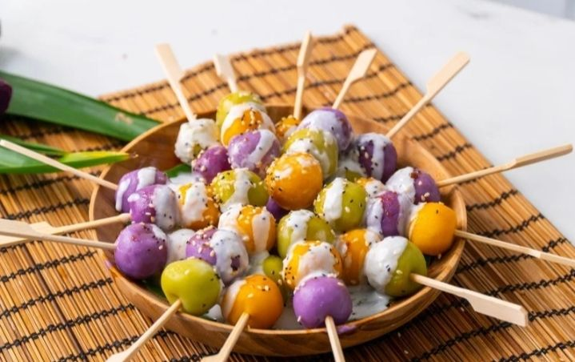
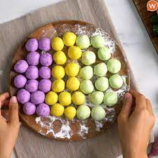
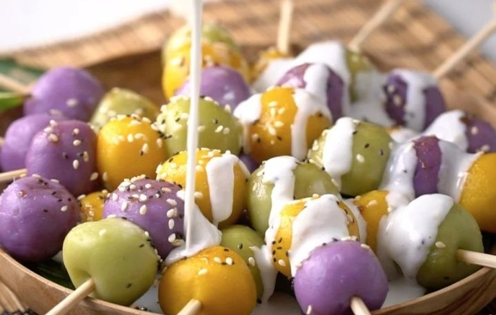

Bua
loy
Skewers
Bualoy Skewers
บัวลอยเสียบไม้
 วัตถุดิบส่วนผสม
- แป้งข้าวเจ้า 1 ถ้วย
- แป้งข้าวเหนียว 1 ถ้วย
- มันบ่วงบด 50 กรัม
- ฟักทองบด 50 กรัม
- น้ำใบเตย 50 มิลลิลิตร
- น้ำเปล่า(แป้งมันม่วง) 50 มิลลิลิตร
- น้ำเปล่า(แป้งฟักทอง) 50 มิลลิลิตร
- หัวกะทิ 500 มิลลิลิตร
- น้ำตาลทราย ½ ถ้วย
- เกลือ ½ ช้อนชา
- งาขาว และงาดำ
- น่ำตาลเเดง
- ถั่วแดงบด 100 กรัม
วิธีทำ
ทำตัวแป้งบัวลอย
- แบ่งแป้งข้าวเหนียว และแป้งข้าวเจ้า เป็นสามส่วนเท่า ๆ กัน
- เมื่อแบ่งได้เเล้วถ้วยเเรกใส่มันม่วงบดและน้ำเปล่า นวดให้เข้ากันจนแป้งไม่ติดมือ
- ถ้วยที่สองใส่ฟักทองบดและน้ำเปล่า นวดให้เข้ากันจนแป้งไม่ติดมือ
- ถ้วยที่สามใส่น้ำใบเตย นวดให้เข้ากันจนแป้งไม่ติดมือ
- นำถั่วแดงบดมาปั้นให้เป็นลูกกลมขนาดเล็กหรือเท่ากับเหรียญบาท
- นำแป้งบัวลอยมาแผ่ให้เป็นเเผ่นเเล้วนำใส่ถั่วแดงบดที่ปั้นไว้มาใส่เป็นไส้ จากนั้นให้ปั้นเป็นลูกกลมๆ ตามชอบ
- จากนั้นนำมาเสียบไม้ และนำไปแช่ให้บัวลอยเซตตัว
- น้ำบัวลอยเสียบไม้ไปต้มในน้ำเดือด เมื่อสุกให้ตักออกใส่น้ำเย็นเพื่อเซตตัว
วิธีทำน้ำราดบัวลอย
- นำหม้อตั้งไฟปานกลาง ใส่หัวกะทิลงไป
- จากนั้นตามด้วยน้ำตาลทราย และเกลือ
- คนให้เข้ากัน รอจนเดือดเป็นอันเสร็จ
จัดจาน
จัดบัวลอยเสียบไม้ใส่จาน ตามด้วยน้ำกะทิราดที่เตรียมไว้ และน้ำตาลทรายแดง ตามด้วยโรยงาดำและงาขาว เป็นอันเสร็จ พร้อมเสิร์ฟ
| ข้อมูลโภชนาการ | |
| หนึ่งหน่วยบริโภค | : 230 cal |
| ไขมันทั้งหมด | 0% |
| มีพลังงานทั้งหมด | 220 กิโลแคลอรี่ |
| คาร์โบไฮเดรต | 48 กรัม |
| โปรตีน | 4 กรัม |
ที่มา: https://www.wongnai.com/recipes/bua-loy-stick